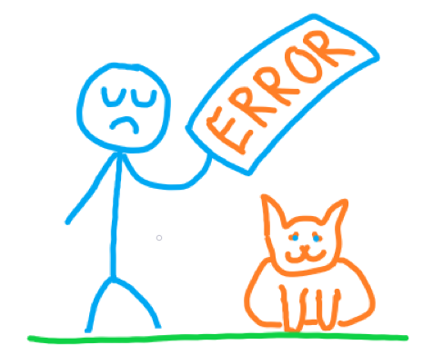

Keine Parameter für die Suche nach einem Abi Zeugnis eingegeben!
Zurück Abi Zeugnis Suchen
Zurück Abi Zeugnis Speichern
404

Sie haben keine Parameter für die Suche eingegeben!!
Lösung:
Bitte gehen Sie zurück zur Abitur Zeugnis Suche und geben sie ein oder mehrere Parameter ein!!
oder erstellen sie ein Abitur Zeugnis